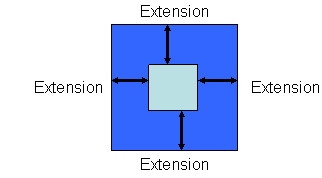
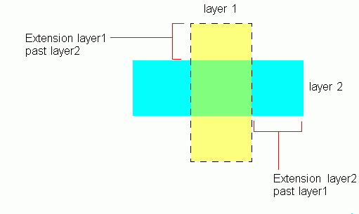

|
 |
 |
||||||
|
|
|
||||||
The built-in layer pair constraint definition oacMinExtension specifies the minimum distance a shape on one layer must extend past a shape on a second layer in database units. Extensions are specified from the outside edge of the shape on the second layer to the inside edge of the shape on the first layer. This constraint definition is not symmetric, implying that the minimum extension of layer1 past layer2 is not the same as the minimum extension of layer2 past layer1.
When the oacMinExtension constraint is specified for a layer pair, the oacMinDualExtension constraint should not be specified.
| Constraint type: | oaLayerPairConstraint (Symmetric: no) |
| Value types: | oaIntValue, oaInt1DTblValue |
| Database types: | oaDesign, oaTech |
| Object types: | oaAppObject |
The following value types are supported by this constraint:
This value represents the minimum extension in database units
Units: DBU
This value represents a width and value pair where the ("width") lookup key in the table represents the width of the shape on the second layer, and the value for the table represents the minimum extension of that second shape past the first.
Units: DBU
The following parameters are supported by this constraint:
| Name | Value Type | Units | Default | Description | ||||||
|---|---|---|---|---|---|---|---|---|---|---|
| coincidentAllowed oacCoincidentAllowedParamType |
oaBooleanValue | Boolean | False |
When the coincidentAllowed parameter is specified and is true, then shapes can either meet the minimum extension or their edges can be coincident. If the parameter is false or is not specified, then the edges must meet the minimum extension specified and cannot be coincident. |
||||||
| distanceMeasureType oacDistanceMeasureTypeConstraintParamType |
oaIntValue | Enum | euclidian |
This parameter specifies whether the extension distance metric is Euclidean (the default) or Manhattan. This parameter is represented by an oaDistanceMeasureType enumeration:
|


Extension rules ensure that the necessary overlaps are maintained to provide good connections after manufacturing. These kinds of constraints are common for metal shapes over cuts. If the process shifts the metal layer, the metal might uncover the cut and the resulting connection would not be clean. Providing the minimum extensions of the metal past the cut ensures that with the process variations and differences, the correct connections are maintained.
Copyright 2002 - 2010 Cadence Design Systems, Inc.
All rights reserved.